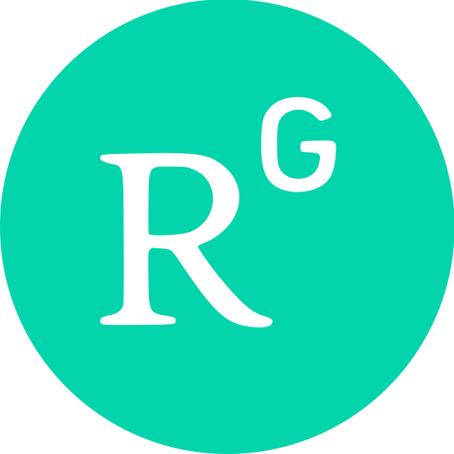

Data Scientist | AI & Machine Learning | Bioinformatics
Hi there, welcome to my website.
I am a data scientist and bioinformatics engineer transitioning into applied AI and machine learning. Over the past seven years, I have built data-driven solutions for high-dimensional biomedical problems, spanning genomics, clinical diagnostics, translational research, and healthcare analytics. My work has consistently combined statistical rigor, software engineering, and domain expertise to turn complex biological signals into interpretable and actionable insights.
My story
My background in bioinformatics is not separate from my interest in AI—it is the foundation for it. In clinical and translational research, I have worked with noisy, heterogeneous, and high-dimensional data, where robust feature engineering, model validation, and clear communication are essential. That experience shaped my interest in machine learning for scientific and real-world decision support.
I have led analytical workflows for minimal residual disease (MRD), biomarker discovery, viral vector and cellular therapy QC, pathogen surveillance, and multi-omics analysis. In these roles, I developed and productionized pipelines that supported clinical studies, translational projects, and regulatory-ready reporting. These projects taught me how to translate technical work into measurable outcomes: improving assay sensitivity, reducing pipeline cost and runtime, supporting oncology studies, and enabling data-driven decision making in biomedical R&D.
Since 2025, I have been pursuing an MSc in Data Science at Leiden University, majoring in Computer Science. My coursework has strengthened my machine learning foundation in areas including agentic LLMs, deep learning, reinforcement learning, information retrieval, recommender systems, AutoML, evolutionary algorithms, social network analysis, and optimization. My average grade in the first year is 8.58 across 12 courses, reflecting a strong academic basis for an AI-focused transition.
I am now looking to apply my background in bioinformatics, data science, and ML to internship opportunities in AI, data science, and applied machine learning, particularly in healthcare, scientific computing, and intelligent decision-support systems.
Key focus areas
- Applied machine learning & predictive modeling
- Large language models & agentic AI
- Clinical and scientific data science
- Translational bioinformatics & computational genomics
- Multi-omics data integration & diagnostics
Professional snapshot
- Precision Scientific (2021–2024): Delivered MRD and HRD analytics for oncology studies; built ML classifiers, developed clinical-ready reporting pipelines, and contributed to national reference-standard work.
- GrandOmics Biosciences (2019–2021): Led targeted sequencing development, designed pathogen surveillance systems, and benchmarked sequencing technologies for rare disease and infectious disease applications.
- Geneis Beijing (2017–2019): Developed cancer biomarker assays and translational genomic pipelines for lung and gastric cancer studies, with a focus on CNV/MSI/TMB analyses and clinical interpretation.
Education
- MSc Data Science (Computer Science) - Leiden University, The Netherlands (2025–2027)
- MSc Bioinformatics - The University of Edinburgh, UK (2015–2016)
- BEng Biomedical Engineering - Northeastern University, China (2011–2015)
Certifications
Further links
|
 |
|